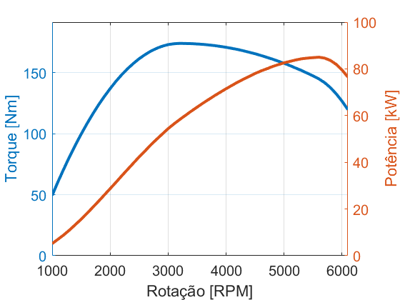

Dinâmica longitudinal - Limites de propulsão - Exercício 1
Força máxima de tração em terceira marcha
Contents
Parâmetros
clear ; close all ; clc % Motor data = load('engineData.csv'); RPM = data(:,1); % Rotação do motor [rpm] Te = data(:,2); % Engine Torque [Nm] Pe = data(:,3); % Engine Power [kW] [TeMax,ind] = max(Te) RPMtMax = RPM(ind) % Transmissão Nt = [3.78 2.12 1.46 1.03 0.84]; % Relação de transmissão cada marcha Nf = 3.944; % Final drive ratio % A curva de potência já é na roda. eta = 0.96; % Eficiência da transmissão (estimado) % Pneu 185/60R14 aro = 14; % [pol] largura = 185; % [mm] perfil = 60; % [%] diametro = 25.4*aro/1000 + 2*(perfil/100*largura/1000); raio = diametro/2;
TeMax =
174
ind =
23
RPMtMax =
3200
Curvas do motor
figure hold on ; grid on ; box on set(gca,'fontsize',15,'ylim',[0 1.1*max(Te)],'xlim',[RPM(1,1) RPM(end,end)]) yyaxis left plot(RPM,Te,'linewidth',3) ylabel('Torque [Nm]') yyaxis right plot(RPM,Pe,'linewidth',3) ylabel('Potência [kW]') xlabel('Rotação [RPM]')
Força máxima em terceira marcha
omegaE = RPMtMax*2*pi/60; % Velocidade angular do motor [rad/s] % Combined ratio of transmission and final drive Ntf = Nt(3)*Nf; % (terceira marcha) omegaW = omegaE/Ntf; % Velocidade da roda [radq/s] vMS = omegaW*raio; % Velocidade longitudinal [m/s] vKPH = vMS*3.6 % Velocidade longitudinal [km/h] Fx = TeMax*Ntf*eta/raio % Força de tração do carro [N]
vKPH = 60.5046 Fx = 3.3305e+03